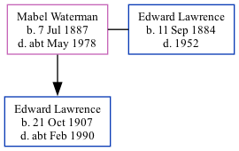

Mabel Gertrude Lawrence (née Waterman) 1887 - c1978
[ Home ] | [ Calendar ] | [ Surnames Index ] | [ Family History ]Mabel Waterman, the wife of Edward James S Lawrence (the great-uncle of Nigel Horne), was born in St Lawrence, Thanet, Kent, England on Jul 7, 1887<span class="citation">1,2,3,4</span> and married Edward (a general builder's laborer with whom she had 1 child, Edward Douglas) in Thanet, Kent, England around Nov 1906<span class="citation">5</span>.</p><p>Throughout her life, she lived on 2 Clifton Road, St Lawrence in Thanet on Apr 2, 1911<span class="citation">1</span>; and on 22 Grosvenor Road, Ramsgate, Kent on Sep 29, 1939<span class="citation">2</span>. <p>She died <i>c.</i> May 1978 in Thanet<span class="citation">4</span>.
Children
- Edward Douglas was born on Oct 21, 1907
Citations
- 1911 Census for England & Wales - Findmypast (was age 23 and the wife of the head of the household)
- 1939 Register - Findmypast (was the wife of the head of the household)
- England & Wales births 1837-2006 - Findmypast
- England & Wales deaths 1837-2007 - Findmypast
- England & Wales marriages 1837-2008 - Findmypast
Media
1939 Register Transcription - TNA-R39-1767-1767C-002-37
England & Wales marriages 1837-2008 - BMD/M/1906/4/AZ/000420/303
England & Wales births 1837-2006 - BMD/B/1887/3/AZ/000601/003
England & Wales deaths 1837-2007 - BMD/D/1978/2/AZ/000656/149
1939 Register - TNA/R39/1767/1767C/002/38
Family Tree
Generated by Ged2Site. Last updated on Jul 20, 2025